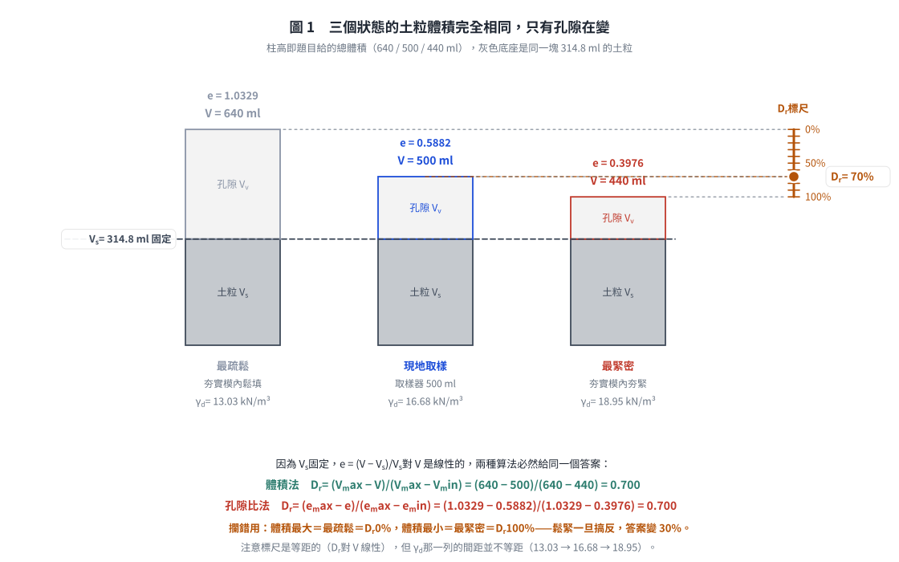
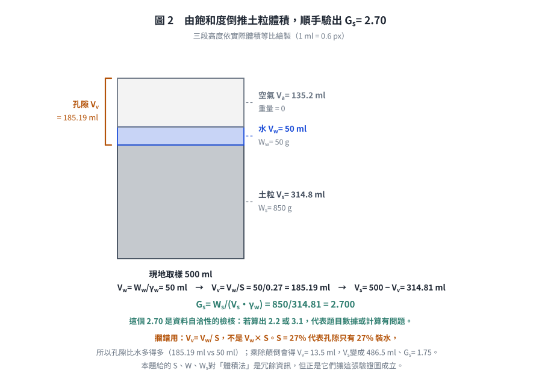

考題編號：SM-2020-3
主分類： SM-U1-1 土壤基本性質
副分類： 無
分析法： 混合
標籤： 相對密度 三相關係 孔隙比 飽和度 含水量
1. 原始題目重述 (Problem Restatement)
三、茲欲了解某工址現地土壤之緊密程度，故以取樣器取得 500 ml 之砂土，其重量為 900 克，而此砂土於烘乾後之重量為 850 克。若將此砂土置於夯實模內，其在最緊密狀態時之體積為 440 ml，而在最疏鬆狀態時之體積為 640 ml，若現地砂土之飽和度為 27%，請求得此砂土之相對密度。（25 分）
2. 考題核心精神與出題者意圖 (Core Concepts & Examiner's Intent)
本題旨在測驗考生對於土壤三相圖（相依關係）與相對密度（Relative Density）公式的深刻理解。
一般而言，相對密度公式常以孔隙比 $e$ 或乾單位重 $\gamma_d$ 呈現，然而出題者刻意提供同質量的土壤在「現地」、「最緊密」、「最疏鬆」三種狀態下的總體積，測驗考生是否明白：對於相同質量的土壤顆粒，其孔隙比的變化量與總體積的變化量成正比，因而可以直接用體積差來計算相對密度。此外，題目也提供了飽和度等資訊，讓考生可以透過完整的三相圖計算進行驗證。
3. 解題戰略地圖與陷阱分析 (Strategic Roadmap & Trap Analysis)
- 戰略一（體積直接法，最直觀）： 題目已明示「將此砂土」置於夯實模內，代表最緊密與最疏鬆狀態下，砂土的固體重量 $W_s$ 均為 850 g。既然固定了固體質量，相對密度 $D_r$ 可直接利用體積的比例關係求解：$D_r = \frac{V_{max} - V}{V_{max} - V_{min}}$。
- 戰略二（三相圖驗證法，最嚴謹）： 若要嚴謹地從孔隙比 $e$ 出發，需先求出固體體積 $V_s$。利用原狀土體積 $V=500$ ml、含水量（透過濕重與乾重之差求得）與飽和度 $S=27\%$，推求孔隙水體積與孔隙體積，進而解出 $V_s$ 與比重 $G_s$。再分別計算 $e_{max}$、$e_{min}$ 及原狀 $e$，最後代入標準相對密度公式。
- 陷阱分析：
- 陷阱一： 誤以為相對密度公式只能代入乾單位重而強行轉換，增加了計算複雜度並容易出錯。
- 陷阱二： 未注意到 $V=500$ ml 就是原狀體積，或是誤用公式時把「鬆/緊」狀態搞反（體積最大對應最疏鬆狀態，體積最小對應最緊密狀態）。
3.5 變數層次分析 (Variable Hierarchy Analysis)
最終目標
求得該現地砂土之相對密度 $D_r$（Relative Density）。
本題關鍵公式（依計算順序）
（方法一：體積直接法）
直接利用同質量土壤體積差公式：
$$ D_r = \frac{V_{max} - V}{V_{max} - V_{min}} \times 100\% $$
（方法二：三相圖推導法）
$$ W_w = W - W_s $$
$$ V_w = \frac{\boxed{W_w}}{\gamma_w} $$
$$ V_v = \frac{\boxed{V_w}}{S} $$
$$ V_s = V - \boxed{V_v} $$
$$ e = \frac{\boxed{V_v}}{\boxed{V_s}} \quad , \quad e_{max} = \frac{V_{max} - \boxed{V_s}}{\boxed{V_s}} \quad , \quad e_{min} = \frac{V_{min} - \boxed{V_s}}{\boxed{V_s}} $$
$$ D_r = \frac{\boxed{e_{max}} - \boxed{e}}{\boxed{e_{max}} - \boxed{e_{min}}} \times 100\% $$
L1：題目直接給定
| 符號 | 數值 | 說明 |
|---|---|---|
| $V$ | $500 \text{ ml}$ | 現地取樣砂土總體積 |
| $W$ | $900 \text{ g}$ | 現地砂土總重量 |
| $W_s$ | $850 \text{ g}$ | 現地砂土烘乾後重量（固體重） |
| $V_{min}$ | $440 \text{ ml}$ | 最緊密狀態體積 |
| $V_{max}$ | $640 \text{ ml}$ | 最疏鬆狀態體積 |
| $S$ | $27\%$ | 現地砂土飽和度 |
L2：需知識點推導
三相圖推演
| 符號 | 公式／來源 | 卡關? |
|---|---|---|
| $W_w$ | $W - W_s$ | |
| $V_w$ | $W_w / \gamma_w$ | |
| $V_v$ | $V_w / S$ | |
| $V_s$ | $V - V_v$ | |
| $e, e_{max}, e_{min}$ | $V_v / V_s$ | |
| $D_r$ | $(e_{max} - e) / (e_{max} - e_{min})$ | |
L3：深層知識（不懂就卡住）
| 知識點 | 說明 | 卡關? |
|---|---|---|
| 體積與孔隙比的正比關係 | 對於相同固體質量（$V_s$ 固定）的土樣，總體積變化量與孔隙比變化量完全成正比，即 $\Delta V = V_s \Delta e$。故相對密度公式可直接將 $e$ 替換為對應的總體積 $V$ 計算。 |
4. 步驟化詳細計算過程 (Step-by-Step Detailed Calculation)
本題可透過兩種視角進行解答。由於方法一最直觀迅速，為考場首選；方法二則提供嚴謹的三相圖驗證。
方法一：直接運用體積關係（推薦）
策略註解： 由相對密度定義 $D_r = \frac{e_{max} - e}{e_{max} - e_{min}}$，而孔隙比定義為 $e = \frac{V - V_s}{V_s}$。因「此砂土」代表試驗中土樣的固體質量不變（$V_s$ 為定值），將 $e$ 代入 $D_r$ 公式可得：
$$ D_r = \frac{\frac{V_{max} - V_s}{V_s} - \frac{V - V_s}{V_s}}{\frac{V_{max} - V_s}{V_s} - \frac{V_{min} - V_s}{V_s}} = \frac{V_{max} - V}{V_{max} - V_{min}} $$
此關係式表明，同重量砂土的相對密度可由其總體積的差異直接求得。
- 代入給定體積數值：
- $V_{max} = 640 \text{ ml}$
- $V_{min} = 440 \text{ ml}$
-
$V = 500 \text{ ml}$
-
計算相對密度：
$$ D_r = \frac{640 - 500}{640 - 440} = \frac{140}{200} = 0.70 $$
$$ \boxed{D_r = 70\%} $$

圖 1 三個狀態的土粒體積完全相同，只有孔隙在變。它攔的是把鬆緊搞反（體積最大＝最疏鬆＝$D_r$ 0%，搞反會得 30%），同時一眼看出兩種算法為何等價：$V_s$ 固定使 $e$ 對 $V$ 線性，故右側標尺是等距的——但注意 $\gamma_d$ 那一列（13.03 → 16.68 → 18.95）並不等距。
方法二：透過三相圖完整解算（驗證法）
策略註解： 利用題目給定的「總重、乾重、體積、飽和度」四個參數，可以精確推求出土壤固體的真實體積 $V_s$，進而算出實際的孔隙比。
- 求出水體積與孔隙體積：
- 砂土總重 $W = 900 \text{ g}$，乾重 $W_s = 850 \text{ g}$
- 水重 $W_w = W - W_s = 900 - 850 = 50 \text{ g}$
- 假設水單位重 $\gamma_w = 1 \text{ g/cm}^3$，水體積 $V_w = 50 \text{ ml}$
-
已知飽和度 $S = 27\% = 0.27$，故孔隙體積 $V_v$ 為：
$$ V_v = \frac{V_w}{S} = \frac{50}{0.27} = 185.185 \text{ ml} $$ -
求出固體體積與現地孔隙比：
- 固體體積 $V_s = V - V_v = 500 - 185.185 = 314.815 \text{ ml}$
(註：由此可得砂土比重 $G_s = \frac{W_s}{V_s \gamma_w} = \frac{850}{314.815} = 2.70$，為十分合理的數值，驗證了題意的自洽性) -
現地孔隙比 $e = \frac{V_v}{V_s} = \frac{185.185}{314.815} = 0.5882$
-
求出極限狀態之孔隙比：
- 最疏鬆狀態孔隙比 $e_{max}$：
$$ e_{max} = \frac{V_{max} - V_s}{V_s} = \frac{640 - 314.815}{314.815} = 1.0329 $$ -
最緊密狀態孔隙比 $e_{min}$：
$$ e_{min} = \frac{V_{min} - V_s}{V_s} = \frac{440 - 314.815}{314.815} = 0.3976 $$ -
代入相對密度定義式：
$$ D_r = \frac{e_{max} - e}{e_{max} - e_{min}} = \frac{1.0329 - 0.5882}{1.0329 - 0.3976} = \frac{0.4447}{0.6353} = 0.7000 $$
$$ \boxed{D_r = 70\%} $$

圖 2 由飽和度倒推土粒體積，順手驗出 $G_s = 2.70$。它攔的是 $V_v = V_w/S$ 的乘除顛倒：$S = 27\%$ 代表孔隙只有 27% 裝水，故孔隙遠比水多（185.19 ml vs 50 ml）；若寫成 $V_w \times S$ 會得 $V_v = 13.5$ ml、$G_s = 1.75$——一個不可能的比重，正好也是這張圖的自我檢核價值所在。
5. 關鍵爭議點與進階探討 (Critical Issues & Advanced Discussion)
- 資訊冗餘性（Redundancy of Information）： 本題中，給定的飽和度 $S=27\%$、總重 $W=900\text{g}$ 及乾重 $W_s=850\text{g}$ 對於直接使用「體積法」解題而言是多餘的。出題者設計了完全自洽的數據（推算得 $G_s = 2.70$），目的在於測驗考生是否能夠看穿表象，掌握相對密度中 $\Delta e \propto \Delta V$ 的核心物理意義；或者給予保守的考生另一條透過三相圖逐步解算的途徑。考場上強烈建議採用「方法一」以節省時間，但可將「方法二」作為驗算機制。
- 第三種驗算：用乾單位重定義式：相對密度的另一個常見寫法是
$$D_r = \frac{\gamma_d - \gamma_{d,min}}{\gamma_{d,max} - \gamma_{d,min}} \times \frac{\gamma_{d,max}}{\gamma_d}$$
本題固體乾重固定為 $850 \text{ g}$，三個狀態的乾單位重分別為
$$\gamma_d = \frac{850}{500} \times 9.81 = 16.677 \ ,\quad \gamma_{d,max} = \frac{850}{440} \times 9.81 = 18.951 \ ,\quad \gamma_{d,min} = \frac{850}{640} \times 9.81 = 13.029 \ \text{kN/m}^3$$
代入得 $D_r = \frac{16.677-13.029}{18.951-13.029} \times \frac{18.951}{16.677} = 0.6160 \times 1.1364 = 0.700$，
與前兩法完全一致。注意這個式子後面那個 $\frac{\gamma_{d,max}}{\gamma_d}$ 修正項不可省略——
少了它會得 61.6%，是這條公式最常見的失分點（$D_r$ 對 $e$ 線性、對 $\gamma_d$ 並不線性）。 - 單位一致性： 本題體積單位使用 $\text{ml}$，等價於 $\text{cm}^3$；在三相圖計算中，將水單位重 $\gamma_w$ 視為 $1 \text{ g/ml}$ 是合理且必要的假設。
解析日期：見 wiki/log.md ｜ 圖解補繪：2026-08-28（向量 SVG，程式繪製，腳本 gen_SM-2020-3.py 可重跑；同名 2× PNG 供簡報／影片管線使用）